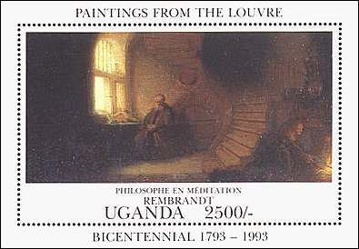

|
|
Foreign Masters Rembrandt van Rijn |
|

The Louvre Museum possesses an interesting collection of Rembrand's works. Please take a look below at some of them, that were issued on stamps by Uganda, in 1993, in order to commemorate the Bicentennial of the museum.

On the above souvenir sheet is reproduced the work: Philosopher in Meditation. Sc. 1126. The below sheetlet is very nice, but will take some time to download. Please be patient, you will be recompensed for that.

The sheetlet shows the following Rembrand's paintings or details of them:
-
Self-portrait with an Easel. Sc. 1125a
-
Birds of Paradise. Sc. 1125b
-
The Beef Carcass. Sc. 1125c
-
The Supper at Emmaus. Sc. 1125d
-
Hendrickje Stoffels. Sc. 1125e
-
Titus, the Son of the Artists. Sc. 1125f
-
The Holy Family (left). Sc. 1125g
-
The Holy Family (right). Sc. 1125h

The integral Holy Family painting is displayed on a nice souvenir sheet of Antigua, issued in 1980, June 23. Sc. 578.
Links to Rembrandt's works shown on this site:
| Published:
09/02/2000. Revised: 12/24/06. Copyright © 2000 - 2007 by Victor Manta, Switzerland. All rights reserved worldwide. |
|